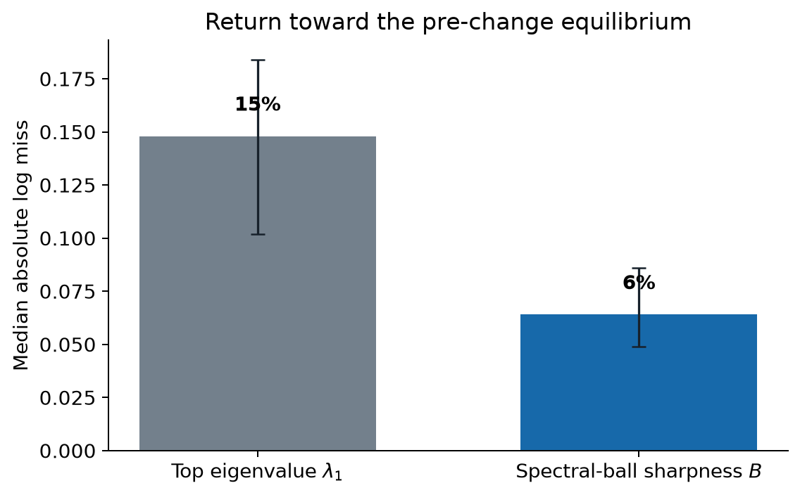
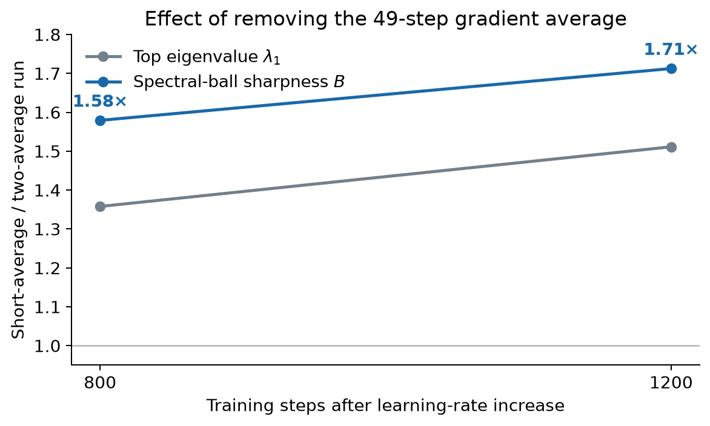
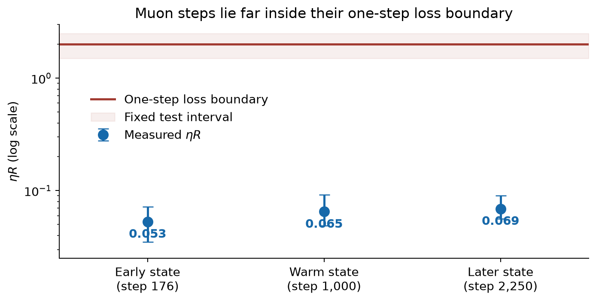

Two curvature measures track Muon's learning-rate response at different precision
After the learning rate changes, spectral-ball sharpness and the largest Hessian eigenvalue both return toward inverse-learning-rate scaling within ordinary run-to-run variation. Spectral-ball sharpness fluctuates about half as much, which makes its measured return look tighter.
We studied a 12-layer, width-768 transformer trained with Muon on FineWeb at NanoGPT speedrun scale. For each of its 72 hidden weight matrices, we compared two definitions of sharpness.
The familiar definition is \(\lambda_1(H)\), the largest eigenvalue of the Hessian for one weight matrix. Muon instead constrains each matrix update by its spectral norm, which motivates
\[ B(H)=\max_{\lVert Z\rVert_2\le1}\langle Z,H[Z]\rangle. \]\(B(H)\) is the largest Hessian quadratic form among matrix directions \(Z\) whose spectral norm is at most one. It combines curvature from many Euclidean Hessian directions because a matrix can have several singular values equal to one.
Spectral-ball sharpness gives the quieter measurement
At training step 2,250, we copied one model and optimizer state into three runs that saw the same minibatches. One run kept the learning rate unchanged. The other runs multiplied it by 1.30 or 0.77. Training remained stable in all three runs.
The edge-of-stability hypothesis predicts inverse scaling between the learning rate and sharpness. If the learning rate changes by a factor \(r\), a sharpness measure \(S\) should approach \(S_{\rm unchanged}/r\). We measure the miss at each later training step by
\[ E_S=\left|\log\frac{rS_{\rm changed}}{S_{\rm unchanged}}\right|. \]The unchanged-learning-rate run supplies \(S_{\rm unchanged}\) at the same training step. This comparison removes the curvature change that would have occurred with continued training even without changing the learning rate. A perfect return to the expected value gives \(E_S=0\).

Spectral-ball sharpness gives the smaller miss in 65 of 66 matrices. Its typical miss is 6%, compared with 15% for \(\lambda_1\). Those values are comparable to the matched-run reproducibility floors of 7–10% and 11–15%, respectively. Both measures therefore resolve the same return toward inverse-learning-rate scaling; \(B(H)\) measures it with about twice the precision.
Neither scalar supplies a governing stability law for Muon. Along the base training trajectory, \(B(H)\) grows by about 2.4 times between the measured early and late states. A dense equal-compute comparison is testing whether its lower measurement noise persists across training.
The network changes curvature over hundreds of training steps
The raw \(\lambda_1\) trajectories show what “return toward equilibrium” means. The table reports the median change from the copied state.
| Training steps after the learning-rate change | Change in \(\lambda_1\) after multiplying the learning rate by 1.30 | Change in \(\lambda_1\) after multiplying the learning rate by 0.77 |
|---|---|---|
| 50 | −5% | +5% |
| 400 | −23% | +23% |
| 800 | −27% | +39% |
| 1,200 | −32% | +38% |
A larger learning rate is followed by lower curvature, while a smaller learning rate is followed by higher curvature. The change takes hundreds of training steps. It is movement of the trained network through parameter space, rather than a modification of the learning rate inside Muon's polar map.
Removing the long average removes the curvature response
This comparison asks whether the different curvature responses can be attributed specifically to the longer gradient history.
We compared a two-average momentum rule, which mixes exponential gradient averages with average lags of about 6 and 49 steps, with a rule that uses only the 6-step average. The implemented Nesterov mixture combines 95% momentum-weighted gradient with 5% current raw gradient. Under that convention, the two rules' gains on a gradient component that flips sign every step are 0.0892 and 0.1270. The comparison therefore changes both retained history and the gain on exact alternation.
Correction, 3 September 2026. An earlier version said these gains differed by less than 10%. That calculation included the raw-gradient part of Nesterov momentum for the two-average rule but omitted it for the short-average rule. With the convention applied consistently, the gains differ by about 43%.
We increased the learning rate by the same factor from the same saved state, using the same minibatches. The curvature responses were qualitatively different.
| Training steps after multiplying the learning rate by 1.30 | Change in \(\lambda_1\), two-average momentum | Change in \(\lambda_1\), short-average momentum |
|---|---|---|
| 150 | −18% | −10% |
| 400 | −23% | −4% |
| 1,200 | −32% | +6% |

Figure 2 shows the combined effect of removing the 49-step average and increasing the gain on exact alternation. The short-average run finishes about 0.09 nats worse in validation loss. This establishes that the curvature adjustment and training outcome depend on the momentum kernel, but it does not determine which of those two kernel changes caused the difference.
The run using the two-average kernel shows the curvature adjustment; the run using the short-average kernel does not. A matched-gain comparison or an intervention that redistributes the existing buffer state while preserving the first update is required to separate long-memory coherence from ordinary frequency response.
The stability calculation must include the gradient averages
Muon combines the current gradient matrix with exponential gradient averages before applying the polar map. For one weight matrix, the implemented recurrence is
\[ m_{j,t}=\beta_jm_{j,t-1}+(1-\beta_j)g_t,\qquad p_t=(1-\alpha)g_t+\alpha\sum_j a_jm_{j,t}, \] \[ X_{t+1}=(1-\eta d)X_t-\eta s\,\operatorname{polar}(p_t). \]Here \(m_{j,t}\) is one gradient average, \(\beta_j\) sets its average lag, \(a_j\) sets its relative weight, and \(\alpha\) sets the total momentum mixture. The remaining scalars \(d\) and \(s\) are weight decay and Muon's matrix-shape scale.
A perturbation changes both the weights and every gradient average:
\[ \begin{aligned} \delta m_{j,t} &=\beta_j\delta m_{j,t-1}+(1-\beta_j)H_t[\delta X_t],\\ \delta p_t &=(1-\alpha)H_t[\delta X_t]+\alpha\sum_j a_j\delta m_{j,t},\\ \delta X_{t+1} &=(1-\eta d)\delta X_t-\eta s\, D\operatorname{polar}_{p_t}[\delta p_t]. \end{aligned} \]The local stability boundary is determined by the largest multiplier of this combined recurrence. Here \(H_t\) is the Hessian operator at \(X_t\), and \(D\operatorname{polar}_{p_t}\) is the derivative of the polar map at \(p_t\). The multiplier depends on the Hessian, the contents of the gradient averages, their decay rates, and \(p_t\). A scalar computed from the current Hessian omits the other inputs.
Rescaling the loss gives the same constraint. Multiplying the loss by a positive constant rescales the gradients, the gradient averages, and the Hessian, while the exact polar direction remains unchanged. A Hessian measure that rescales with the loss cannot by itself define criticality for Muon.
An alternating gradient component can reduce curvature slowly
The measured timing suggests a mechanism. After the learning rate increases, a gradient component that changes sign every training step grows immediately. Curvature falls later. Removing the 49-step average suppresses both the persistent alternating component and the later curvature decrease.
Write one alternating weight displacement as \(X_t=\bar X+(-1)^taZ\), where \(a\) is its amplitude and \(Z\) is its matrix direction. Expanding the gradient around the slowly moving center \(\bar X\) gives
\[ g_t=\bar g+(-1)^taH[Z]+\frac{a^2}{2}D^3L[Z,Z,\cdot]+O(a^3). \]The linear term cancels when two consecutive steps are averaged. The term proportional to \(a^2\) does not. Let \(q\) denote the alternating component of the matrix presented to the polar map. The remaining slow contribution is
\[ \Delta\bar X_{\rm slow} \simeq -\eta s\frac{a^2}{2} D\operatorname{polar}_{q}\!\left[D^3L[Z,Z,\cdot]\right]. \]The contribution reduces curvature along a fixed direction \(Z\). The polar factor is the gradient of the nuclear norm, so its derivative is positive semidefinite wherever it is differentiable. Rotation of \(Z\) adds a term with no fixed sign, which prevents this local calculation from determining the final sharpness exactly.
A direct scalar test shows that amplitude is insufficient. The negative inner product between the alternating parts of consecutive updates and gradients is reproducible across reruns that diverge at the weight level. After normalization by its non-alternating counterpart, it predicts later matrix-by-matrix curvature change with the wrong sign. The polar derivative and the contents of the gradient averages remain necessary.
The realized update is far from its one-step loss boundary
The combined recurrence governs local stability. A separate calculation tests whether the actual update direction is limited by curvature. Define \(U_t=s\,\operatorname{polar}(p_t)\). Its quadratic one-step loss change is
\[ \Delta L_{\rm quad} =-\eta\langle g_t,U_t\rangle +\frac{\eta^2}{2}\langle U_t,H_t[U_t]\rangle. \]Define the curvature per unit of descent as
\[ R_t =\frac{\langle U_t,H_t[U_t]\rangle} {\langle g_t,U_t\rangle} \]The quadratic one-step loss boundary occurs when \(\eta R_t=2\). Replays of the update produced from the momentum averages place it far below that boundary.

Figure 3 shows that the median ratio changes little across the measured training ages. Muon is therefore not operating at the edge along its realized update direction. High-curvature components of the gradient field create the edge behavior, while the update obtained from the momentum-weighted gradient largely avoids those components. The level and age trend of the low ratio remain unexplained.
Both curvature measures resolve the network's response to a changed learning rate; spectral-ball sharpness is about twice as precise in the measurements available so far. Momentum kernel choice controls the later curvature response. The present comparison leaves its decisive property unresolved because it changes both the retained gradient history and the gain on exact alternation.
All learning-rate and momentum comparisons use one saved mid-training state and matched minibatches. The sharpness and one-step-loss measurements were interpreted under rules fixed before their values were inspected.